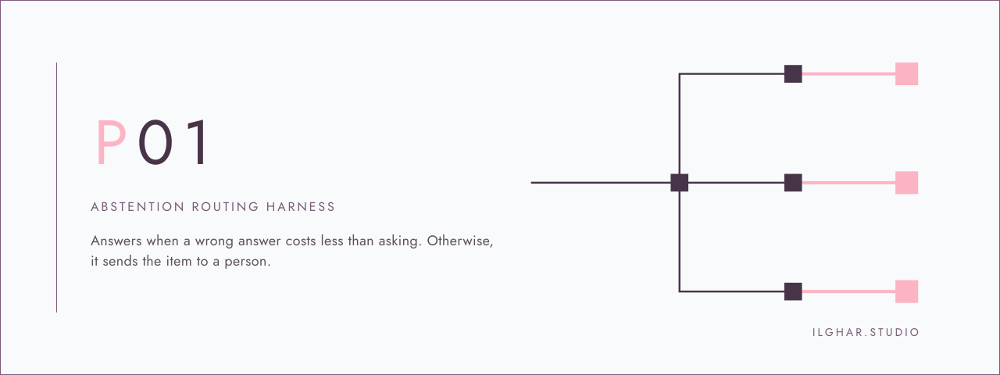

Abstention and routing harnessInteractive walk-throughilghar.studio
When should a router step back?
Twelve requests come in. Readers suggest a desk and say how sure they are. The harness either answers or hands the request to a person, and writes down why. Start with the case it gets wrong.
- Mock data – confidences written by hand, from no model.
- In-sample – threshold tuned on these same 12 cases, not held out.
- Advisory – no document is moved.
Follow one request
Set the threshold
Support is the share of readers naming a desk. Below the threshold — or when a wrong answer would cost as much as asking a person — the request is held. At 0.50: three answered, nine held, M11 still slips.